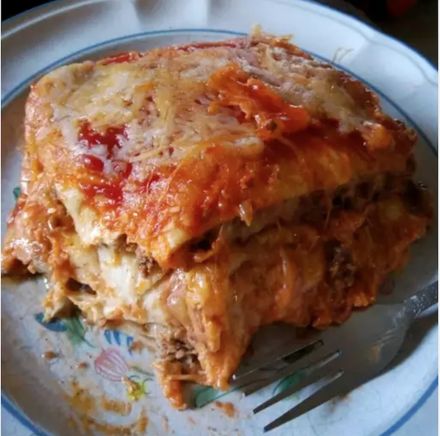

Delicious Lasagna Recipe
Homepage

Mexican Lasagna! No lasagana Noodles needed
This is a traditional dish in my family. Anyone can make it really. It is
composed of traditional Mexican ingredients layered over the top of one another
in a lasagna-like fashion (hence the name) but has little similarity to lasagna,
so lasagna haters have no fear!
Ingredients
- ½ pounds ground beef
- ¼ cup water
- 1 (1 ounce) packet taco seasoning mix
- 12 (8 inch) flour tortillas, or more if needed
- 1 (14 ounce) can refried beans
- 3 cups shredded Colby-Jack cheese
- 1 (8 ounce) jar taco sauce
- 1 cup shredded Colby-Jack cheese
Steps/Directions
- Preheat oven to 350 degrees F (175 degrees C). Grease a 9x13-inch casserole dish.
- Heat a large skillet over medium-high heat and stir in ground beef. Cook and stir
until beef is crumbly, evenly browned, and no longer pink, about 10 minutes. Drain
and discard any excess grease. Add water and taco seasoning; cook and stir until mixture
has thickened, 5 to 10 minutes.
- Arrange 3 tortillas in the bottom of the casserole dish; spread about half the can
of refried beans and half the ground beef atop the tortilla layer. Sprinkle 1 cup
Colby-Jack cheese over ground beef layer. Arrange 3 more tortillas over the cheese. Spread
in the remaining 1/2 can refried beans and half the jar of taco sauce; sprinkle with 1 cup
Colby-Jack cheese. Arrange 3 more tortillas and top with remaining ground beef and 1 cup
Colby-Jack cheese. Top with last 3 tortillas and remaining 1/2 jar taco sauce.
- Bake in the preheated oven until top tortilla layer begins to brown, 20 to 25 minutes.
Sprinkle 1 cup Colby-Jack cheese over lasagna.
- Turn on oven's broiler.
- Place lasagna under the broiler until Colby-Jack cheese is melted and bubbling, 3 to 5 minutes.
Back to top